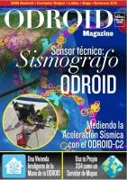

Estas páginas contienen enlaces a revistas, libros y manuales dedicados al software libre, a las distribuciones GNU/Linux y a los contenidos libres:

Número 60 - 2017 agosto
Descarga (PDF 23,8 MB inglés)
Número 127 - 2017 agosto
Descarga (PDF 8,49 MB inglés)

Número 44 - 2017 agosto
Descarga (PDF 6,83 MB inglés)

Número 124 - 2017 agosto
Descarga (PDF 8,76 MB Inglés)
Número 43 - 2017 julio
Descarga (PDF 6,38 MB inglés)

Número 43 - 2017 julio
Descarga (PDF 6,35 MB español)

Número 11 + - 2017 julio
Descarga (PDF 11,4 MB inglés)

Número 11 - 2017 julio
Descarga (PDF 11,7 MB inglés)

Número 126 - 2017 julio
Descarga (PDF 11,8 MB inglés)

Número 123 - 2017 julio
Descarga (PDF 12,2 MB Inglés)

The Camera Module Guide - 2017 junio
Descarga (PDF 6,23 MB inglés)

Número 32 - 2016 noviembre
Descarga (PDF 71,0 MB inglés)

Número 31 - 2016 octubre
Descarga (PDF 71,7 MB inglés)

Número 30 - 2016 septiembre
Descarga (PDF 63,2 MB inglés)

Número 29 - 2016 agosto
Descarga (PDF 66,5 MB inglés)

Número 28 - 2016 julio
Descarga (PDF 71,2 MB inglés)